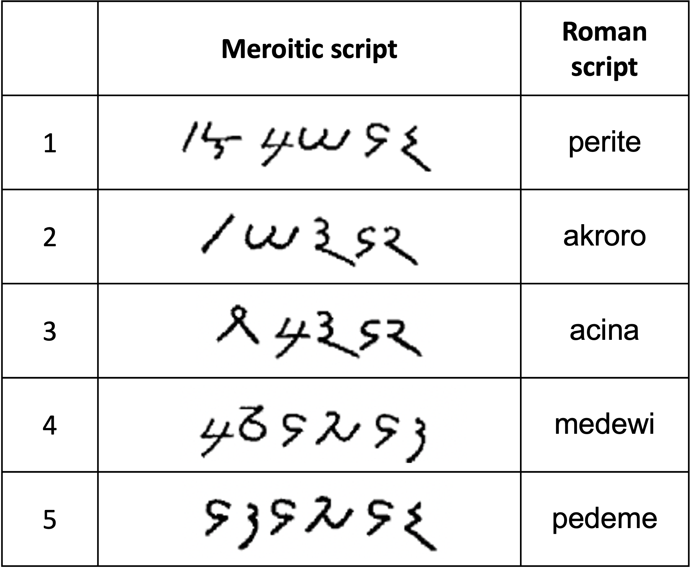

Exercises in Verifying the Accuracy of Data
Below are three exercises that give you practice in verifying the accuracy of the source material used in a NACLO problem. Please try each of them and send your answers to Tom (tom.mccoy@princeton.edu). Note that these problems require access to sources that are available on the NACLO PC Google Drive; if you do not have access to that Google Drive, please let Tom know. Some of these exercises are based on real NACLO problems, but the issues that the problems have were not present in those actual problems (that is, you should not judge the authors of those problems for the mistakes illustrated here, since the authors did not make the mistakes—we have added mistakes here for the purpose of these exercises). Nonetheless, all of the mistakes illustrated here belong to general categories that have been observed in actual submitted problems.
Exercise 1: Meroitic
The Meroitic script was used in ancient Egypt and Sudan. Below are five words in the Meroitic script, along with Roman transliterations (a transliteration is the result of converting a piece of text from one writing system to another). However, there are two mistakes in the table! Use the source in the Google Drive to identify the two mistake.
Exercise 2: Yankunytjatjara
Here are five sentences in English along with their translations in Yankunytjatjara, a language spoken in Australia. But be warned!! One of the Yankunytjatjara sentences is inaccurate. Use the source material available on the Google Drive to find out which one is inaccurate. Hint: The error is a major one; it is not related to hyphens or parenthetical information, since it is acceptable to deviate from the source in minor formatting areas such as those.
Exercise 3: Maranungku
Maranungku is a language spoken in Australia. Below are seventeen phrases in English along with their Maranungku translations. However, seven of the Maranungku phrases are incorrect! (Four of the seven all have the same error as each other; the other three have unique errors). Using the source on the Google Drive, identify these errors.